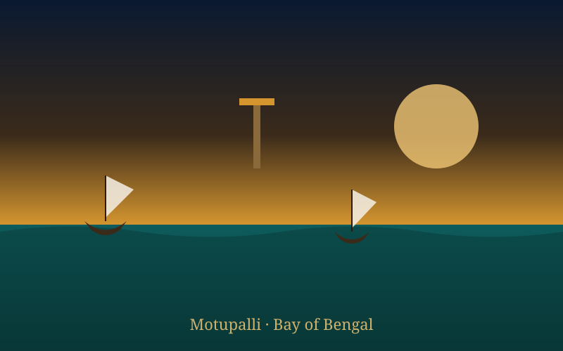
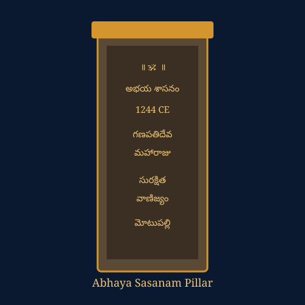
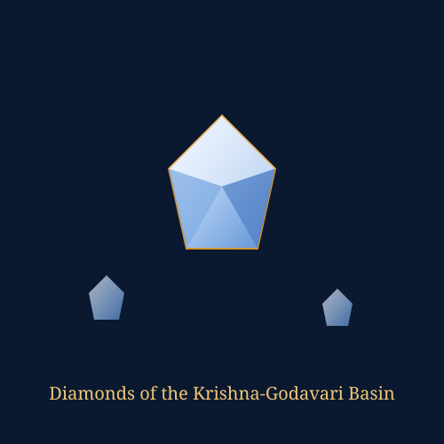
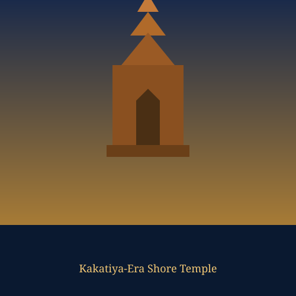

Motupalli Ancient Port Explorer
Step onto the Bay of Bengal shore that Marco Polo called Mutfili. Discover the Kakatiya dynasty's cosmopolitan diamond and muslin port, protected by one of medieval India's most remarkable charters of safe trade.
A Cosmopolitan Gateway on the Bay of Bengal
Motupalli sits on the Coromandel coast in present-day Prakasam district, Andhra Pradesh. Long before the Kakatiyas, the Greek geographer Ptolemy is thought to have referred to a coastal settlement here as "Mousopalli" in the 2nd century CE, hinting at trade links stretching back to the classical world.
The port truly flourished under the Kakatiya dynasty of Warangal (12th–14th century CE), when it was known locally as Desi-Uyyakonda-Pattanam and to foreign visitors as Mutfili or Motupalli. Ships from across the Indian Ocean world called here, drawn by inland diamond fields, fine cotton weaving centres, and the relative safety the Kakatiya rulers guaranteed to visiting merchants.
📜 At a Glance
- Location: Prakasam district, Andhra Pradesh, on the Bay of Bengal.
- Also known as: Desi-Uyyakonda-Pattanam; Mutfili to foreign travellers.
- Golden age: 12th–14th century CE, under the Kakatiya dynasty.
Maritime Trade Significance
Motupalli linked the Kakatiya hinterland's mines and looms to buyers across the Indian Ocean, making it one of the busiest export outlets on India's eastern seaboard.
Diamond Exports
Diamonds mined in the Krishna-Godavari river basin passed through Motupalli, making it one of the earliest documented diamond-export hubs anywhere in the world.
Muslin & Fine Cotton
Delicate hand-woven muslin, calico and silk cloth from Andhra weaving centres were prized exports, alongside pearls, spices, camphor and sandalwood.
Indian Ocean Networks
Traders from the Arabian coast, Persia and Southeast Asia called at Motupalli, connecting the Kakatiya kingdom to the wider medieval Indian Ocean trading world.
🛡️ The Abhaya Sasanam, 1244 CE
- Issued by: King Ganapatideva (r. c. 1199–1262), inscribed on a stone pillar at Motupalli.
- Guaranteed: The safety of foreign merchants, their crews and their cargo while trading at the port.
- Ended: The customary seizure of goods from ships wrecked along the coast, a practice that had discouraged overseas trade.
The Kakatiyas and the Motupalli Charter
Motupalli's most celebrated monument to history is the Abhaya Sasanam ("charter of safety"), issued in 1244 CE by the Kakatiya king Ganapatideva. Carved on a stone pillar near the port, it promised foreign traders that their lives and goods would be protected, and that an officer of the crown would enforce this guarantee rather than allow local custom to claim wrecked cargo.
Ganapatideva's daughter and successor, Rudramadevi, is remembered for continuing this openness to overseas merchants. In 2021, archaeologists documenting a temple on Motupalli's outskirts uncovered a Tamil-language inscription dated to 1308 CE, from the reign of Prataparudra II, recording a land grant for temple offerings — a sign that royal engagement with Motupalli continued well beyond Ganapatideva's original charter.
Chronology of Motupalli Port
Tracing Motupalli's journey from a classical-era anchorage to a celebrated charter port of the Kakatiya dynasty.
Ptolemy's Mousopalli
The Greek geographer Ptolemy records a coastal settlement widely identified with Motupalli, pointing to very early Indian Ocean trade contact.
Rise under the Kakatiyas
Motupalli grows into a leading international port of the Kakatiya kingdom, known locally as Desi-Uyyakonda-Pattanam.
The Abhaya Sasanam
King Ganapatideva issues the Motupalli charter of safety, guaranteeing protection for foreign merchants and their goods.
Marco Polo's Mutfili
The Venetian traveller describes Mutfili's diamonds and fine textiles during the reign of Queen Rudramadevi and her successors.
Prataparudra II's Land-Grant Inscription
A Tamil-language inscription records a land grant for temple offerings, showing continued Kakatiya-era engagement with Motupalli's temples.
Later Dynasties & Decline
After the Kakatiya kingdom's fall in 1323, Motupalli continued trading under the Reddi kings of Kondaveedu and the Vijayanagara empire, before river siltation and shifting trade routes led to its gradual decline.
The Shore, the Charter & the Trade of Motupalli
Illustrated impressions of the port's coastline, its famous inscription, and the goods that passed through it.




📚 References & Further Reading
- Sastry, P. V. Parabrahma (1978). The Kakatiyas of Warangal. Government of Andhra Pradesh.
- Talbot, Cynthia (2001). Precolonial India in Practice: Society, Region, and Identity in Medieval Andhra. Oxford University Press.
- Epigraphia Indica. Motupalli Inscription of Ganapatideva (Abhaya Sasanam), 1244 CE. Archaeological Survey of India.
- Yule, Henry (trans., 1903). The Travels of Marco Polo: The Kingdom of Mutfili. John Murray.
- Archaeological Survey of India, Epigraphy Branch (2021). Report on the Tamil Inscription of Kakatiya Prataparudra II at Motupalli.